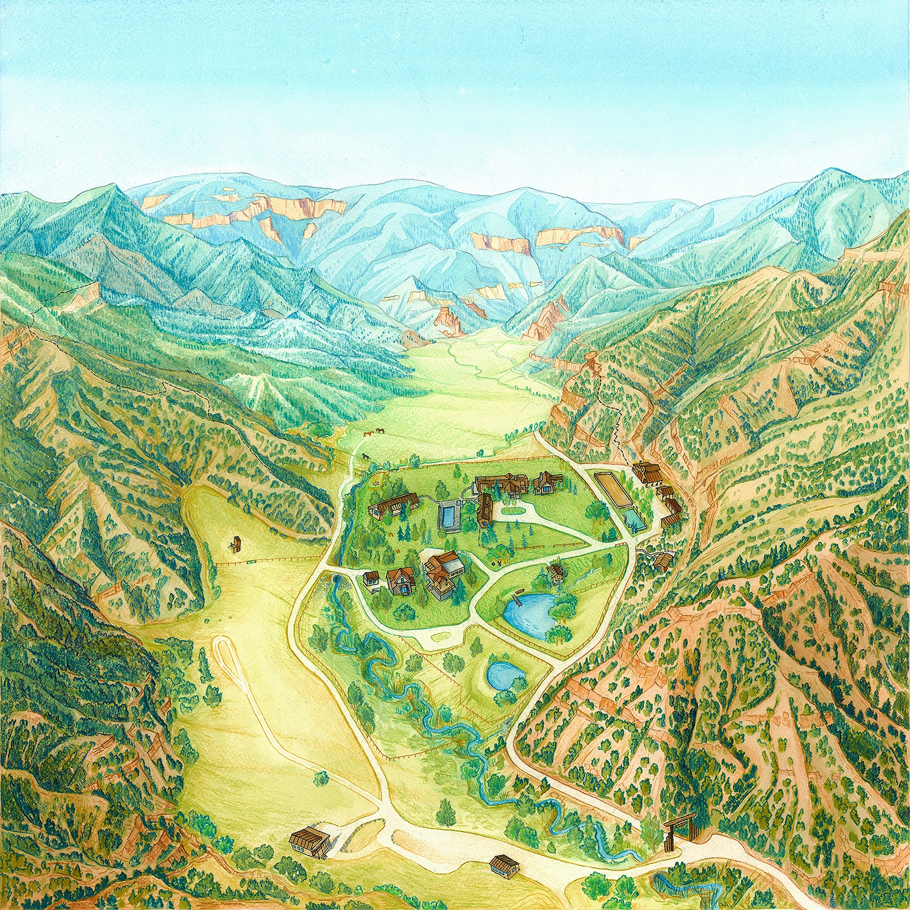
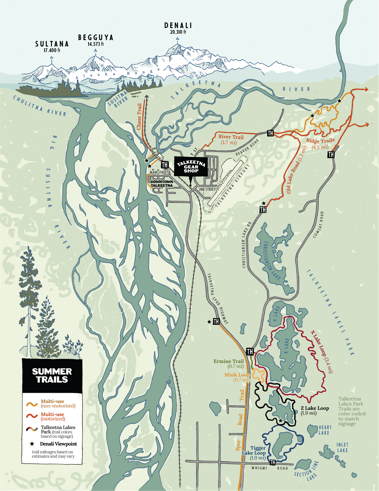

What We Make
Maps that showcase stunning landscapes, tell stories, aid in navigation, help make decisions, and solve complex spatial problems.

3D Perspectives & Photorealistic Renders

Data Visualizations & Science Communication

Hand Painted Works of Art

Signage & Kiosks

Trail & Topographic Brochures